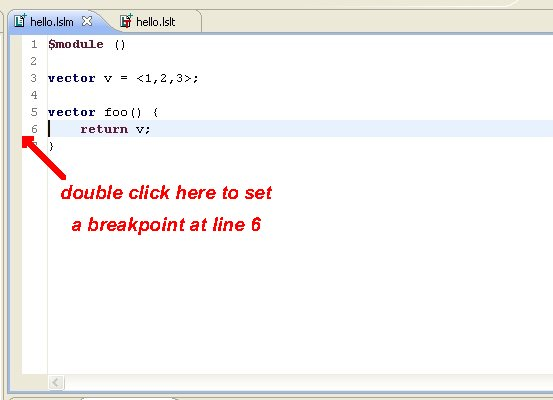
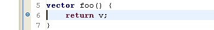
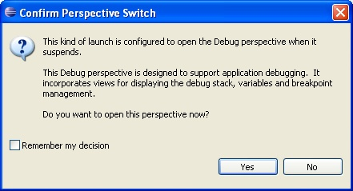

If you are familiar with using Eclipse for debugging other code (e.g. Java), the LSL Plus debugging facilities will be familiar to you. In the Navigator view context menu, there are two ways to launch LSL code: the 'Run' submenu and the 'Debug' submenu:

To launch a program in 'debug' mode, use the 'Debug' selection. Launching in Debug mode won't do much different from launching in normal (non-debug, a.k.a. 'run') mode, unless you have set some breakpoints in your code. Setting a breakpoint is typically done by double-clicking in the vertical bar in the Editor window, next to the line of code you want the debugger to stop at:
Once set, a line with a breakpoint looks like:
Now launching you code in 'debug' will (assuming the line of code you breakpointed gets executed) have some impact. When your first breakpoint is hit, you'll be asked if you want to go into the debug perspective of Eclipse (the debug perspective has various frames and views to assist with debugging):
The debug perspective looks something like this:

There are many options in debug mode. Some of the most commonly used are indicated above. There's an indication of what line is next to be executed (the source file is opened automatically if not already opened). If you are taking advantage of the LSL plus features, then you may have code for a script broken out into modules. The debugger will open those module files as breakpoints in those files are hit. There are four basic ways of continuing execution. The 'continue' button continues execution until another breakpoint is hit, if any. The 'step' button steps execution to the next line of code (which may mean stepping 'into' a function). The 'step-over' button steps to the next line of code in the current function, stepping 'over' a function call. And the 'step-out' button steps out of the current function back up to the next line of code in the function or handler that called the current function.
The 'Variables' view in the debug mode shows variable values in the currently selected frame:

The 'Breakpoints' view shows all the breakpoints, and allows you to delete or disable them:

There are some issues to be aware of when using the debugger. Breakpoints currently can be set on any line in a source file, including in the middle of a comment line, or on a blank line, etc. A breakpoint can only have an effect if it is set on a line of a source file that has an actual executable statement on it. If a statement spans several lines, it has to be set on the first line of the statement.
The code runner/debugger runs the saved version of your tests/modules/scripts. If you have code in an editor and haven't saved it, what is executed is what was last saved (if anything). Breakpoints you set in an editor that contains unsaved code may not reflect the actual code that is breakpointed (if you set a breakpoint on line 6 of a file, then the breakpoint will trigger when line 6 of the saved file is executed, which may be quite different from what you have in your editor window, if you haven't saved).